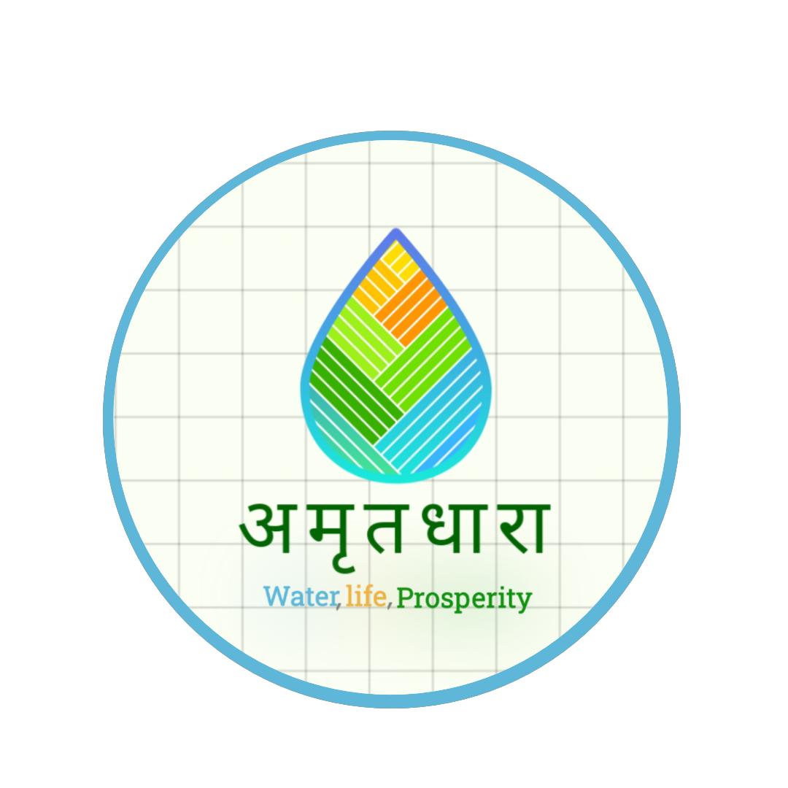

<!DOCTYPE html>
<html lang="en">

<head>
    <meta charset="UTF-8">
    <meta name="viewport" content="width=device-width, initial-scale=1.0">
    <title>Water Scarcity</title>
    <link href="https://cdn.jsdelivr.net/npm/bootstrap@5.3.3/dist/css/bootstrap.min.css" rel="stylesheet"
        integrity="sha384-QWTKZyjpPEjISv5WaRU9OFeRpok6YctnYmDr5pNlyT2bRjXh0JMhjY6hW+ALEwIH" crossorigin="anonymous">
    <link rel="preconnect" href="https://fonts.gstatic.com" crossorigin>
    <link rel="preconnect" href="https://fonts.googleapis.com">
    <link
        href="https://fonts.googleapis.com/css2?family=Roboto:ital,wght@0,100;0,300;0,400;0,500;0,700;0,900;1,100;1,300;1,400;1,500;1,700;1,900&display=swap"
        rel="stylesheet">
    <link rel="stylesheet" href="style.css">
</head>

<body class="backg">
    <nav class="navbar navbar-expand-lg backg"
        style="background-color: #2ec4b6; color: #00171f; font-weight: 500; font-size: larger;">
        <div class="container-fluid">
            <a class="navbar-brand" href="/home.html">AmratDhara</a>
            <button class="navbar-toggler" type="button" data-bs-toggle="collapse"
                data-bs-target="#navbarSupportedContent" aria-controls="navbarSupportedContent" aria-expanded="false"
                aria-label="Toggle navigation">
                <span class="navbar-toggler-icon"></span>
            </button>
            <div class="collapse navbar-collapse" id="navbarSupportedContent">
                <ul class="navbar-nav me-auto mb-2 mb-lg-0">
                    <li class="nav-item">
                        <a class="nav-link" href="product.html">Products</a>
                    </li>
                    <li class="nav-item dropdown">
                        <a class="nav-link dropdown-toggle" href="#" role="button" data-bs-toggle="dropdown"
                            aria-expanded="false">
                            Menu
                        </a>
                        <ul class="dropdown-menu">
                            <li><a class="dropdown-item" href="/method.html">Innovative Methods</a></li>
                            <li><a class="dropdown-item" href="/agriculture1.html">Lack of knowledge</a></li>
                            <li><a class="dropdown-item" href="/agriculture2.html">Water Conservation</a></li>
                            <li><a class="dropdown-item" href="/cases.html">Case Studies</a></li>
                            <li>
                                <hr class="dropdown-divider">
                            </li>
                            <li><a class="dropdown-item" href="#">Something else here</a></li>
                        </ul>
                    </li>
                </ul>
                <form class="d-flex" role="search">
                    <input class="form-control me-2" type="search" placeholder="Search" aria-label="Search">
                    <button class="btn btn-outline-success" type="submit"
                        style="background-color: #cbf3f0; color: black; font-weight: 550;">Search</button>
                </form>
                <a href="/login3.html">
                    <button class="btn btn-outline-success" type="submit"
                        style="background-color: #cbf3f0; color: black; font-weight: 550; margin-left: 10px;">Login</button>

                </a>
            </div>
        </div>
    </nav>


    <div style="margin: 2rem;">
        <h1 style="color: #00171f; margin-bottom: 2rem;">Case Studies/Researches</h1>
        <div class="row">
            <div class="col-3">
                <div id="list-example" class="list-group">
                    <a class="list-group-item list-group-item-action" href="#list-item-1"
                        style="background-color: #2ec4b6;">Hiware Bazar, Maharashtra</a>
                    <a class="list-group-item list-group-item-action" href="#list-item-2"
                        style="background-color: #2ec4b6;"> Jakhni Village, Uttar Pradesh</a>
                    <a class="list-group-item list-group-item-action" href="#list-item-3"
                        style="background-color: #2ec4b6;">Alwar District, Rajasthan</a>
                    <a class="list-group-item list-group-item-action" href="#list-item-4"
                        style="background-color: #2ec4b6;">Neeranchal National Watershed Project</a>
                </div>
            </div>
            <div class="col-8">
                <div data-bs-spy="scroll" data-bs-target="#list-example" data-bs-smooth-scroll="true"
                    class="scrollspy-example" tabindex="0">
                    <h4 id="list-item-1">1. Hiware Bazar, Maharashtra</h4>
                    <p><b>• Overview:</b>Hiware Bazar, a drought-prone village in 
                        Ahmednagar district, Maharashtra, transformed itself from a 
                        water-scarce region into a model village through communitydriven water conservation efforts.<br>
                        <b>•  Key Initiatives:
                        </b><br>
                        <b>Watershed Management:</b> The village adopted watershed 
                        management techniques, including the construction of 
                        check dams, percolation tanks, and contour trenches, to 
                        capture and store rainwater.<br>
                        <b>Rainwater Harvesting:</b> Farmers were encouraged to dig 
                        trenches around their fields to capture rainwater, which 
                        helped recharge the groundwater.
                    </p>
                    <h4 id="list-item-2">2. Jakhni Village, Uttar Pradesh</h4>
                    <p><b>• Overview:</b>Jakhni village in Banda district, Uttar Pradesh, 
                        became a model for water conservation in the Bundelkhand 
                        region, known for its chronic water scarcity.
                        <br>
                        <b>•  Key Initiatives:</b><br>
                        <b>Water Harvesting Structures:</b> Construction of ponds, 
                        check dams, and recharging pits to capture and store 
                        rainwater.<br>
                        <b>Community Involvement: </b> Villagers were actively involved 
                        in the planning and construction of water harvesting 
                        structures, ensuring a sense of ownership.<br>
                        <b>Soil and Water Conservation: </b> Implementation of soil 
                        conservation techniques like contour bunding and 
                        terracing to prevent soil erosion and enhance water 
                        retention.
                    </p>
                    <h4 id="list-item-3">3. Alwar District, Rajasthan</h4>
                    <p><b>• Overview:</b>The revival of traditional water harvesting 
                        techniques in Alwar district, Rajasthan, led to the rejuvenation 
                        of several rivers and improved groundwater levels.
                        <br>
                        <b>•  Key Initiatives:</b><br>
                        <b>Johads: </b> Construction and restoration of johads 
                        (traditional water harvesting structures) to capture and 
                        store rainwater.<br>
                        <b>Community Mobilization:</b> : Led by the NGO Tarun Bharat 
                        Sangh, villagers were mobilized to take part in water 
                        conservation efforts.<br>
                        <b> River Rejuvenation:</b> The construction of johads led to the 
                        revival of the Arvari River, which had been dry for several 
                        decades.
                        
                    </p>
                    <h4 id="list-item-4">4. Neeranchal National Watershed Project</h4>
                    <p><b>• Overview:</b>: Launched by the Government of India, the 
                        Neeranchal National Watershed Project aims to improve the 
                        effectiveness of watershed management programs in India.<br>
                        <b>•  Key Initiatives:
                        </b><br>
                        <b>Integrated Watershed Management: </b> Combining soil 
                        conservation, water management, and agriculture to 
                        enhance the productivity and sustainability of watersheds.<br>
                        <b> Capacity Building: </b>: Training local communities in 
                        watershed management and sustainable agricultural 
                        practices.<br>
                        <b> Technology Adoption: </b> Use of GIS and remote sensing to 
                        plan and monitor watershed interventions
                    </p>
                </div>
            </div>
        </div>

    </div>


    <script src="https://cdn.jsdelivr.net/npm/bootstrap@5.3.3/dist/js/bootstrap.bundle.min.js"
        integrity="sha384-YvpcrYf0tY3lHB60NNkmXc5s9fDVZLESaAA55NDzOxhy9GkcIdslK1eN7N6jIeHz"
        crossorigin="anonymous"></script>
</body>

</html>